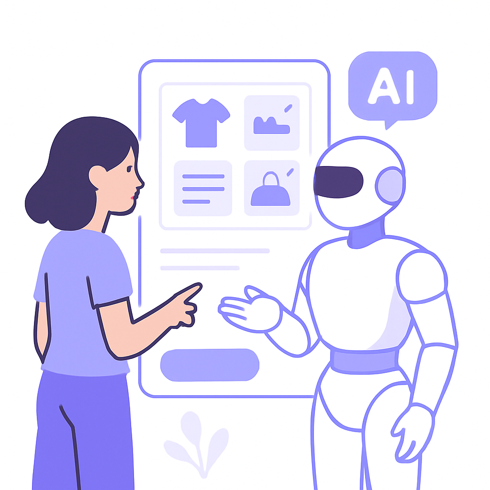
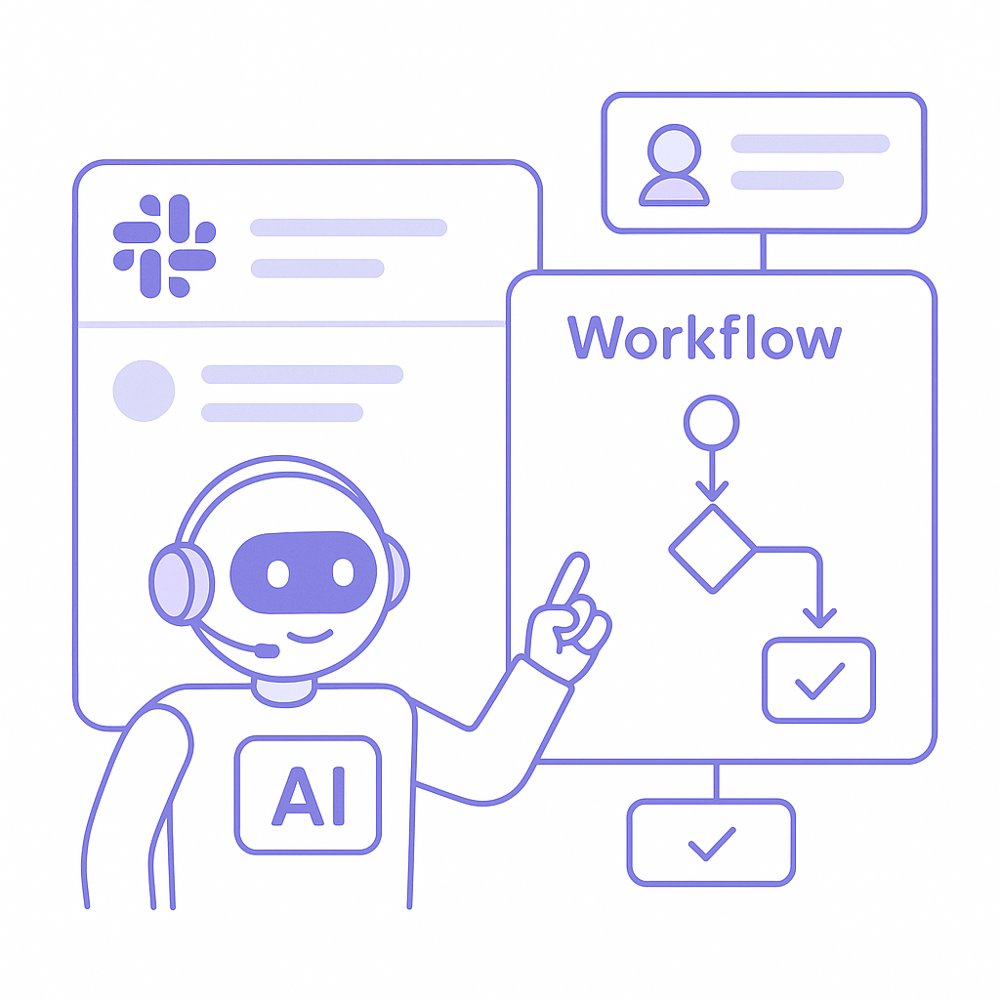
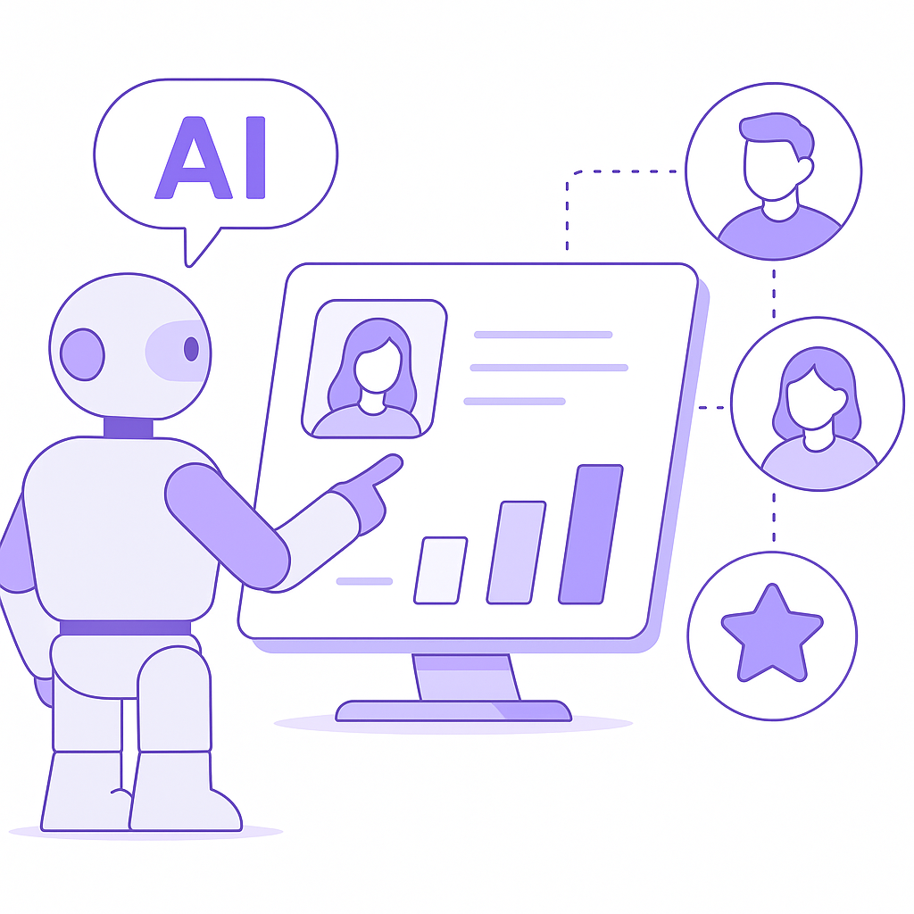
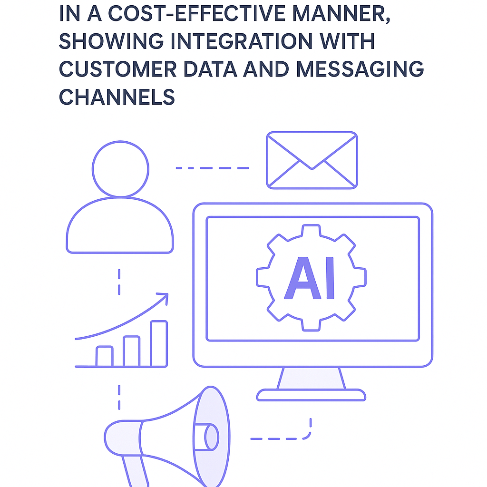

Publishing Recommendation
reviseSeveral posts exhibit signs of AI-generated language and hype, particularly in their tone and claims about AI capabilities. The posts need tightening to remove promotional language and ensure clarity and precision in the messaging.
The content batch today tends to overstate AI's benefits and occasionally dips into promotional territory. While the posts generally align with relevant trends, they need refinement to maintain credibility and align more closely with the brand's practical and insightful voice. Focus on precision and reduce self-promotional language to ensure a balanced portrayal of AI's role in business contexts.
LinkedIn Posts (10)
1. Michaels launches AI shopping assistant ★ Purands solution · high priority
CTA: How do you see AI shaping the future of customer engagement in retail?

⬇ Download image{kind=link}
Image prompt · isometric-flat
Caption: AI in retail: personalized experiences
Alternative hooks
- Ever wondered how AI can transform your shopping experience?
- Personalized shopping isn’t just for high-end brands anymore.
- Why are personalized recommendations key to customer loyalty?
Research behind this post (sources, summaries & confidence)
Michaels launches AI shopping assistant conf 0.85 · AI in business
The launch of an AI shopping assistant by Michaels represents the increasing integration of AI in retail to enhance customer experience and drive retention by offering personalized shopping recommendations.
Sources & what I took from each
- Michaels introduces AI shopping assistant: Michaels has launched 'Ask Mike', an AI shopping assistant designed to improve the retail shopping experience. ↗ read source
- AI's role in enhancing retail customer experience: The AI assistant provides personalized recommendations, enhancing customer engagement and retention. ↗ read source
Examples
- Customers using 'Ask Mike' for personalized shopping assistance at Michaels stores.
Recent news
- Michaels' AI assistant 'Ask Mike' is set to transform in-store shopping experiences.
Original trend links
Risks / caveats
- Potential privacy concerns over data collection through AI assistants.
2. Salesforce rolls out new Slackbot AI agent as it battles Microsoft and Google in workplace AI ★ Purands solution · high priority
CTA: How are you integrating AI into your customer engagement strategy?

⬇ Download image{kind=link}
Image prompt · isometric-flat
Caption: AI agents streamline operations
Alternative hooks
- Salesforce’s new Slackbot AI agent is making waves.
- What if your CRM could talk to your customers like Slack?
- AI agents are quietly transforming retention marketing.
Research behind this post (sources, summaries & confidence)
Salesforce rolls out new Slackbot AI agent as it battles Microsoft and Google in workplace AI conf 0.80 · Practical AI agents for marketing ops
Salesforce's introduction of a new Slackbot AI agent is significant for retention marketing as it enhances customer engagement and streamlines operations. This move positions Salesforce competitively against major players like Microsoft and Google, emphasizing the importance of AI agents in business workflows.
Sources & what I took from each
- Salesforce launches new AI agent for Slack: Salesforce has officially announced the launch of a new Slackbot AI agent designed to enhance workplace communication and efficiency. ↗ read source
- Increased competition in workplace AI tools: Salesforce's move is seen as a strategic effort to compete with Microsoft and Google, who have also been enhancing their AI capabilities in workplace tools. ↗ read source
Examples
- Salesforce's Slackbot AI agent streamlines customer service operations by automating routine inquiries.
Recent news
- Salesforce's new Slack integration aims to improve team collaboration and customer interaction through AI.
Original trend links
Risks / caveats
- Potential user resistance to AI integration in workplace communication.
3. Listen Labs raises $69M after viral billboard hiring stunt to scale AI customer interviews ★ Purands solution · high priority
CTA: How are you currently using AI to enhance customer retention?

⬇ Download image{kind=link}
Image prompt · isometric-flat
Caption: Turning AI insights into action
Alternative hooks
- Listen Labs just secured $69 million to enhance their AI-powered customer interviews. Let's talk about putting those insights into action.
- How do you turn $69 million worth of AI insights into real customer retention? Purands AI has the answer.
- AI-driven customer insights are powerful, but only if you know how to use them. Here's how Purands AI does it.
Research behind this post (sources, summaries & confidence)
Listen Labs raises $69M after viral billboard hiring stunt to scale AI customer interviews conf 0.80 · AI startups
Listen Labs' significant funding to scale AI customer interviews underscores the growing importance of AI in understanding customer needs and improving retention strategies, highlighting a trend in AI startups focusing on customer data insights.
Sources & what I took from each
- Listen Labs secures $69M in funding: Listen Labs has raised $69 million to expand its AI-driven customer interview platform. ↗ read source
- Focus on scaling AI for customer interviews: The funding will be used to enhance AI capabilities in conducting customer interviews. ↗ read source
Statistics
- Listen Labs raised $69 million in a recent funding round.
Examples
- Businesses using Listen Labs to gain insights from customer feedback efficiently.
Recent news
- Listen Labs' innovative approach to AI customer interviews is attracting significant investor interest.
Original trend links
Risks / caveats
- Challenges in scaling AI technology effectively with new funding.
4. Google’s Gemini 3.6 Flash targets enterprise agent token costs ★ Purands solution · high priority
CTA: Does your team plan to leverage these new cost savings for AI agents?
{kind=link}
Image prompt · isometric-flat
Caption: Cost efficiencies in AI marketing
Alternative hooks
- Enterprises across APAC are buzzing about Google's Gemini 3.6 Flash.
- Why are AI-driven marketing teams eyeing Google's Gemini 3.6 Flash?
- What if you could cut AI costs and boost retention marketing efficiency?
Research behind this post (sources, summaries & confidence)
Google’s Gemini 3.6 Flash targets enterprise agent token costs conf 0.75 · Practical AI agents for marketing ops
Google's Gemini 3.6 Flash aims to reduce token costs for enterprise AI agents, which could significantly lower operational expenses for retention marketing strategies that utilize AI-driven customer engagement.
Sources & what I took from each
- Release of Google’s Gemini 3.6 Flash: Google has introduced Gemini 3.6 Flash, specifically targeting cost reduction in AI token usage. ↗ read source
- Focus on reducing token costs for enterprise AI: The new version is designed to optimize cost efficiency for enterprises using AI agents. ↗ read source
Examples
- Enterprises reporting reduced operational costs after adopting Gemini 3.6 Flash.
Recent news
- Google's Gemini 3.6 Flash is expected to set new standards in cost efficiency for AI solutions.
Original trend links
Risks / caveats
- Potential trade-offs in performance due to cost-cutting measures.
5. Anthropic launches Claude Opus 5, a cheaper AI model for coding, agents and enterprise workflows ★ Purands solution · high priority
CTA: How would a cost-effective AI model like Claude Opus 5 impact your retention strategy?

⬇ Download image{kind=link}
Image prompt · isometric-flat
Caption: Affordable AI solutions in marketing
Alternative hooks
- Why pay more for AI when Anthropic's Claude Opus 5 offers what you need?
- What if you could enhance retention without hiking costs? Meet Claude Opus 5.
- Can Claude Opus 5 redefine your retention strategy? We think so.
Research behind this post (sources, summaries & confidence)
Anthropic launches Claude Opus 5, a cheaper AI model for coding, agents and enterprise workflows conf 0.70 · Practical AI agents for marketing ops
Anthropic's new AI model, Claude Opus 5, offers cost-effective solutions for coding and enterprise workflows, which can be pivotal for retention marketing strategies that rely on efficient AI-driven operations.
Sources & what I took from each
- Launch of Claude Opus 5 by Anthropic: Anthropic has released Claude Opus 5, a cost-effective AI model targeting enterprise workflows and coding. ↗ read source
- Focus on cost reduction for enterprise AI solutions: The model is strategically priced lower to attract enterprises looking for affordable AI solutions. ↗ read source
Examples
- Companies using Claude Opus 5 for automating repetitive coding tasks.
Recent news
- Anthropic's Claude Opus 5 is gaining traction in the APAC region for its affordability and effectiveness.
Original trend links
Risks / caveats
- Potential limitations in capabilities compared to higher-end models.
6. Shopify loyalty app developments on GitHub ★ Purands solution · high priority
CTA: How are you leveraging Shopify's loyalty innovations to boost customer retention?
Caption: Impact of loyalty strategies on repeat purchases
Alternative hooks
- Developers are redefining loyalty apps on Shopify.
- GitHub projects are reshaping Shopify's loyalty landscape.
- New loyalty innovations on Shopify are a game-changer for retention.
Research behind this post (sources, summaries & confidence)
Shopify loyalty app developments on GitHub conf 0.70 · Shopify ecosystem
New developments in Shopify loyalty apps on GitHub indicate ongoing innovation in loyalty program design, which is critical for retention marketing strategies focused on increasing customer lifetime value.
Sources & what I took from each
- New Shopify loyalty apps on GitHub: Multiple new projects related to Shopify loyalty apps have been uploaded to GitHub, showcasing innovation in this area. ↗ read source
- Focus on loyalty program design and innovation: The GitHub projects emphasize new approaches to loyalty program design aimed at enhancing customer retention. ↗ read source
Examples
- Developers creating customizable loyalty solutions for Shopify merchants.
Recent news
- Ongoing developments in Shopify loyalty apps are expected to drive innovation in customer engagement.
Original trend links
- https://github.com/Alohamonde/loyalty-pulse
- https://github.com/gregularjoe/loyalty-and-rewards
- https://github.com/Yubayer/Loyalty-Referral-Shopify-App
Risks / caveats
- Potential compatibility issues with existing Shopify integrations.
7. Hugging Face CEO calls for ‘radical transparency’ after ‘unprecedented’ OpenAI hack
CTA: How are you addressing transparency and trust in your AI systems?
Alternative hooks
- When a breach shakes the AI world, transparency becomes a necessity.
- The OpenAI hack is a stark reminder: trust in AI systems is fragile.
- Transparency isn't optional for AI platforms; it's essential.
Research behind this post (sources, summaries & confidence)
Hugging Face CEO calls for ‘radical transparency’ after ‘unprecedented’ OpenAI hack conf 0.85 · AI in business
Calls for transparency following a major OpenAI hack emphasize the need for security and trust in AI systems, which is crucial for retention marketing platforms that rely on customer data integrity.
Sources & what I took from each
- Hugging Face CEO's call for transparency: The CEO of Hugging Face has called for greater transparency following a significant security breach at OpenAI. ↗ read source
- Impact of security breaches on AI trust: The breach at OpenAI has raised concerns about trust and security in AI systems. ↗ read source
Examples
- Businesses reviewing their AI security protocols in light of OpenAI's breach.
Recent news
- Industry leaders are rallying for increased AI transparency following recent security incidents.
Original trend links
Risks / caveats
- Potential loss of confidence in AI systems due to security vulnerabilities.
8. The AI compute gap: Enterprises are buying infrastructure faster than they can measure what it costs
CTA: How do you ensure your AI investments offer real value? Share your approach.
Alternative hooks
- In the APAC region, enterprises are doubling their AI infrastructure budgets.
- Companies are rushing to adopt cutting-edge AI tools.
- Businesses aren't measuring the cost of their AI investments accurately.
Research behind this post (sources, summaries & confidence)
The AI compute gap: Enterprises are buying infrastructure faster than they can measure what it costs conf 0.80 · AI in business
The rapid acquisition of AI infrastructure without clear cost measurement highlights a potential risk for retention marketing platforms, emphasizing the need for strategic investments in AI technologies.
Sources & what I took from each
- Enterprises rapidly acquiring AI infrastructure: There is an observable trend of enterprises investing heavily in AI infrastructure without thorough cost analysis. ↗ read source
- Lack of cost measurement in AI investments: Many enterprises are failing to accurately measure the costs associated with their AI infrastructure investments. ↗ read source
Examples
- Companies in the APAC region doubling their AI infrastructure budgets without clear ROI assessments.
Recent news
- The rush to adopt AI infrastructure is outpacing cost management capabilities in many enterprises.
Original trend links
Risks / caveats
- Potential financial strain due to unaccounted AI infrastructure costs.
9. AMD to invest up to $5 billion in Anthropic under AI infrastructure deal
CTA: What impact do you think this investment will have on AI infrastructure development?
Alternative hooks
- How much is AMD betting on AI infrastructure? Try $5 billion.
- When AMD puts $5 billion into AI, it's time to pay attention.
- Anthropic's AI ambitions just got a $5 billion boost from AMD.
Research behind this post (sources, summaries & confidence)
AMD to invest up to $5 billion in Anthropic under AI infrastructure deal conf 0.80 · AI startups
AMD's significant investment in Anthropic for AI infrastructure highlights the increasing importance of robust AI systems, which are essential for developing effective retention marketing platforms.
Sources & what I took from each
- AMD's investment in Anthropic: AMD has committed to investing up to $5 billion in Anthropic to enhance AI infrastructure. ↗ read source
- Focus on AI infrastructure development: The investment is intended to bolster the development of AI systems infrastructure. ↗ read source
Statistics
- AMD's $5 billion investment in Anthropic marks one of the largest in AI infrastructure.
Examples
- Anthropic using AMD's investment to upgrade their AI model training facilities.
Recent news
- AMD's strategic partnership with Anthropic is set to accelerate advancements in AI infrastructure.
Original trend links
Risks / caveats
- Potential regulatory challenges due to the scale of the investment.
10. SenseTime’s Galaxy Project targets domestic AI chip scale-up
CTA: What impact do you think local AI chip production will have on marketing strategies?
Alternative hooks
- SenseTime's Galaxy Project is scaling AI chip production in China.
- How SenseTime's chip strategy could change local AI solutions.
- The Galaxy Project: SenseTime's push for AI independence in China.
Research behind this post (sources, summaries & confidence)
SenseTime’s Galaxy Project targets domestic AI chip scale-up conf 0.75 · AI startups
SenseTime's initiative to scale AI chip infrastructure domestically in China reflects the growing emphasis on local AI capabilities, which could impact retention marketing by enabling more localized AI solutions.
Sources & what I took from each
- Launch of SenseTime's Galaxy Project: SenseTime has announced the Galaxy Project, focusing on the domestic scale-up of AI chip production. ↗ read source
- Focus on scaling domestic AI chip infrastructure: The project aims to enhance China's AI capabilities by increasing domestic chip production. ↗ read source
Examples
- Local businesses in China leveraging SenseTime's chips for AI solutions.
Recent news
- SenseTime's Galaxy Project is set to boost local AI development in China.
Original trend links
Risks / caveats
- Geopolitical tensions potentially affecting the project's progress.
Today's Trends
| # | Trend | Category | Why it matters |
|---|---|---|---|
| 1 | Salesforce rolls out new Slackbot AI agent as it battles Microsoft and Google in workplace AI
source |
Practical AI agents for marketing ops | Salesforce's introduction of a new Slackbot AI agent is significant for retention marketing as it enhances customer engagement and streamlines operations. This move positions Salesforce competitively against major players like Microsoft and Google, emphasizing the importance of AI agents in business workflows. |
| 2 | Anthropic launches Claude Opus 5, a cheaper AI model for coding, agents and enterprise workflows
source |
Practical AI agents for marketing ops | Anthropic's new AI model, Claude Opus 5, offers cost-effective solutions for coding and enterprise workflows, which can be pivotal for retention marketing strategies that rely on efficient AI-driven operations. |
| 3 | Google’s Gemini 3.6 Flash targets enterprise agent token costs
source |
Practical AI agents for marketing ops | Google's Gemini 3.6 Flash aims to reduce token costs for enterprise AI agents, which could significantly lower operational expenses for retention marketing strategies that utilize AI-driven customer engagement. |
| 4 | Listen Labs raises $69M after viral billboard hiring stunt to scale AI customer interviews
source |
AI startups | Listen Labs' significant funding to scale AI customer interviews underscores the growing importance of AI in understanding customer needs and improving retention strategies, highlighting a trend in AI startups focusing on customer data insights. |
| 5 | Michaels launches AI shopping assistant
source |
AI in business | The launch of an AI shopping assistant by Michaels represents the increasing integration of AI in retail to enhance customer experience and drive retention by offering personalized shopping recommendations. |
| 6 | Induction Labs Photon-1 Simulates Desktops, Plays Checkers, and Models Billiard Physics From One Pretraining Run
source |
AI startups | Induction Labs' Photon-1 demonstrates the versatility of AI models, suggesting potential applications in diverse domains including customer interactions and retention strategies, making it noteworthy for innovation in AI startups. |
| 7 | Meta, Microsoft, Nvidia, IBM, and others back open-weight AI
source |
AI in business | The support for open-weight AI by major tech companies highlights a shift towards more transparent and accessible AI models, which could influence retention marketing by providing more customizable and cost-effective solutions. |
| 8 | Hugging Face CEO calls for ‘radical transparency’ after ‘unprecedented’ OpenAI hack
source |
AI in business | Calls for transparency following a major OpenAI hack emphasize the need for security and trust in AI systems, which is crucial for retention marketing platforms that rely on customer data integrity. |
| 9 | The AI compute gap: Enterprises are buying infrastructure faster than they can measure what it costs
source |
AI in business | The rapid acquisition of AI infrastructure without clear cost measurement highlights a potential risk for retention marketing platforms, emphasizing the need for strategic investments in AI technologies. |
| 10 | Shopify loyalty app developments on GitHub
source source source |
Shopify ecosystem | New developments in Shopify loyalty apps on GitHub indicate ongoing innovation in loyalty program design, which is critical for retention marketing strategies focused on increasing customer lifetime value. |
| 11 | SenseTime’s Galaxy Project targets domestic AI chip scale-up
source |
AI startups | SenseTime's initiative to scale AI chip infrastructure domestically in China reflects the growing emphasis on local AI capabilities, which could impact retention marketing by enabling more localized AI solutions. |
| 12 | AMD to invest up to $5 billion in Anthropic under AI infrastructure deal
source |
AI startups | AMD's significant investment in Anthropic for AI infrastructure highlights the increasing importance of robust AI systems, which are essential for developing effective retention marketing platforms. |
| 13 | OpenAI pushes ChatGPT into patient health records
source |
AI in business | Integrating ChatGPT with patient health records represents a significant step in AI application for personal data management, impacting retention marketing by illustrating potential data integration capabilities. |
| 14 | Warner Bros. lawsuit accuses Amazon of illegally poaching executives
source |
CRM strategy and lifecycle messaging | While not directly related to retention marketing, this lawsuit may influence organizational strategies and talent management within CRM and lifecycle messaging sectors, affecting how companies manage customer relationships. |
Risk Assessment
- Potential overemphasis on AI benefits without acknowledging limitations or challenges.
- Tone occasionally veers into hype, particularly around AI capabilities and impacts.
- Some posts could be perceived as too self-promotional, especially when drawing parallels with Purands AI solutions.
Suggested LinkedIn Comments (30)
Open each post, then paste the copied comment. Nothing is posted automatically.
1. insight · Kene M. — The next AI founders who win will be those who solve urgent problems, prove real
Post by: Kene M.
Why it works: It emphasizes the importance of local context in AI innovation, highlighting a practical approach to solving regional issues.
↗ Open LinkedIn post to paste comment2. insight · Recyclify — AI is becoming part of everyday business. From customer support to coding, more
Post by: Recyclify
Why it works: It highlights the necessary groundwork that often goes unnoticed but is essential for successful AI integration.
↗ Open LinkedIn post to paste comment3. opinion · Niraj R. — Physical AI Internship Opportunity One of our pre-seed customers is building a
Post by: Niraj R.
Why it works: It acknowledges the value of practical experience over monetary compensation for early-career professionals.
↗ Open LinkedIn post to paste comment4. insight · Ron Wiener 🚀 — One of the biggest mistakes founders make happens before they write a single lin
Post by: Ron Wiener 🚀
Why it works: It underscores the importance of aligning financial strategy with business goals, especially in the AI-driven landscape.
↗ Open LinkedIn post to paste comment5. insight · Sanjana Gowda — The next billion-dollar AI company is hiring today. You’ve probably never heard
Post by: Sanjana Gowda
Why it works: It offers practical advice on job-seeking strategies that go beyond traditional methods, adding value to the discussion.
↗ Open LinkedIn post to paste comment6. opinion · Chris R Gaudet — The tech world is the goal. The persistence is the fuel that keeps pushing me. T
Post by: Chris R Gaudet
Why it works: It resonates with the author's sentiment, reinforcing the importance of perseverance in career pursuits.
↗ Open LinkedIn post to paste comment7. expansion · Aarti Sharma — Technology is only one part of enterprise transformation. #TechLeadership #Fina
Post by: Aarti Sharma
Why it works: It expands on the original point by emphasizing the importance of cultural and leadership factors in digital transformation.
↗ Open LinkedIn post to paste comment8. insight · LADEE Samuel — 🚨 The Paradigm Shift: From the "AI Game" to the "Software Game" The tech industr
Post by: LADEE Samuel
Why it works: It clarifies the evolving role of AI, focusing on integration rather than standalone value, aligning with the post's message.
↗ Open LinkedIn post to paste comment9. insight · OxValue.AI — Good Friday, coffee in one hand, five minutes to spare? Here's how to spend them
Post by: OxValue.AI
Why it works: It addresses the geographical concentration issue, adding depth to the conversation on AI investment distribution.
↗ Open LinkedIn post to paste comment10. insight · Elmar Welling — AI Startups Enter the Era of Application Innovation
Post by: Elmar Welling
Why it works: It emphasizes the shift towards user-centered AI applications, aligning with the post's theme of innovation.
↗ Open LinkedIn post to paste comment11. insight · Chung Kit — Ir. and Ts. Different Titles, One Common Mission. 🇲🇾 Too often, people compare
Post by: Chung Kit
Why it works: It highlights the synergy between the two roles, emphasizing their importance in practical terms.
↗ Open LinkedIn post to paste comment12. insight · International Centre for Industrial Transformation (INCIT) — Industry 4.0 sounds simple in a slide deck. It's messier on the shop floor. Se
Post by: International Centre for Industrial Transformation (INCIT)
Why it works: It acknowledges the real-world challenges of Industry 4.0 and underscores the importance of structured assessment.
↗ Open LinkedIn post to paste comment13. insight · Karpagam Institute of Technology — Industry 5.0 is transforming the future by combining human creativity with intel
Post by: Karpagam Institute of Technology
Why it works: It adds depth by emphasizing the importance of human creativity in the evolving tech landscape.
↗ Open LinkedIn post to paste comment14. insight · Angeline Guo — Last month, I left DoorDash to become a founder again. I genuinely enjoyed the w
Post by: Angeline Guo
Why it works: It connects to the post's narrative about startup agility and concretes it with a real-world example.
↗ Open LinkedIn post to paste comment15. insight · Auren Forge — An AI-first company is an organization that places artificial intelligence at th
Post by: Auren Forge
Why it works: It deepens the conversation by explaining the strategic shift needed for an AI-first company.
↗ Open LinkedIn post to paste comment16. insight · Lisa S. — 🔥 Your controls expertise could help power the next generation of aerospace and
Post by: Lisa S.
Why it works: It highlights the importance of technical skills in a rapidly evolving industry, adding value to the job post.
↗ Open LinkedIn post to paste comment17. insight · Spencer Keith Jones — Who said tech couldn’t be fun? Thanks to the Arc team for giving me a glimpse o
Post by: Spencer Keith Jones
Why it works: It expands on the post's theme by highlighting the broader impact of technological innovation on physical industries.
↗ Open LinkedIn post to paste comment18. insight · BCS365 — Technology is important. But confidence often comes down to the people behind it
Post by: BCS365
Why it works: It underscores the importance of human elements in technology partnerships, aligning with the post's theme.
↗ Open LinkedIn post to paste comment19. opinion · Piyush Makhija — The AI Revolution Will Destroy India's Tech Industry (And Create New Opportuniti
Post by: Piyush Makhija
Why it works: It offers a balanced view on AI's dual impact, acknowledging both the challenges and opportunities it presents.
↗ Open LinkedIn post to paste comment20. insight · Dewayne J Grunden II — The Main problem in the technology industry is that the government blackmails th
Post by: Dewayne J Grunden II
Why it works: It addresses the post's concerns with a nuanced perspective on the need for balanced regulation.
↗ Open LinkedIn post to paste comment21. insight · Christopher Price — We're hiring for engineers and ops at YC Startup School! We're looking for: • A
Post by: Christopher Price
Why it works: It highlights the significance of infrastructure in AI scalability, adding depth to the hiring announcement.
↗ Open LinkedIn post to paste comment22. opinion · Yesim Saydan — ✅AI replaced a CEO ✅How to AI-Proof as a C-suite Leader AI replaced a CEO Here
Post by: Yesim Saydan
Why it works: It challenges the notion of AI replacing humans by emphasizing augmentation, offering a balanced perspective.
↗ Open LinkedIn post to paste comment23. insight · Akshay J. — Calling all TPgMs! 🚨 This is an amazing opportunity with one of my favorite or
Post by: Akshay J.
Why it works: It acknowledges the importance of the mission while highlighting the complexities involved, adding depth to the post.
↗ Open LinkedIn post to paste comment24. respectful challenge · Sean Hastewell — AI Adoption Is Expanding Across Industries
Post by: Sean Hastewell
Why it works: It challenges the broad statement by urging a focus on practical, value-driven implementation, adding nuance to the post.
↗ Open LinkedIn post to paste comment25. insight · Jason Dou — Large language models have become significantly more reliable in 2026 compared t
Post by: Jason Dou
Why it works: It connects the improvement in AI models to potential industry transformations, making the advancement relevant and impactful.
↗ Open LinkedIn post to paste comment26. expansion · José Segadães — What Comes After Large Language Models? The Next Frontier of Artificial Intellig
Post by: José Segadães
Why it works: It expands on the idea of the next AI frontier, providing a forward-looking perspective that adds value.
↗ Open LinkedIn post to paste comment27. insight · Justin Angeles — The complexity behind AI, the Large Language Model, can be described very simply
Post by: Justin Angeles
Why it works: It provides a concrete explanation of how LLMs operate, adding clarity to the post's statement.
↗ Open LinkedIn post to paste comment28. expansion · Md Sumon Shahriar — The conversation around foundation models is still heavily centred on Large Lang
Post by: Md Sumon Shahriar
Why it works: It highlights the wider applicability of foundation models, enriching the post's focus on LLMs.
↗ Open LinkedIn post to paste comment29. insight · Senthil Ramanathan Ph.D. — The Nature Protocols article provides a practical framework for biomedical resea
Post by: Senthil Ramanathan Ph.D.
Why it works: It underscores the importance of responsible AI use in research, aligning with the tutorial's goals and adding weight to its value.
↗ Open LinkedIn post to paste comment30. insight · Harvard Business School Online — In the latest Business Brief, explore a refreshed version of Leadership, Ethics,
Post by: Harvard Business School Online
Why it works: It connects the learning concepts to practical leadership strategies, adding depth to the business brief.
↗ Open LinkedIn post to paste comment